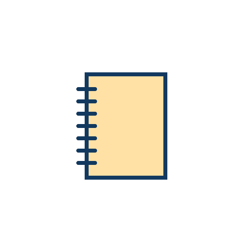

Study Tips
Productivity, Health, and Positivity


Learning How to Study
Learning how to properly and efficiently study is key to success. Many people, after studying for a consistent amount of time, have been able to activate the "flow" state of mind. The "flow" state of mind occurs when someone becomes completely focused on the task at hand. Once you activate this state of mind, productivity, concentration, and clarity naturally increase.
This state of mind is one of the most effective ways to study, but being able to put yourself in the "flow" state of mind is no easy task.
Flow Technique - Our Study Timer
Given that we promote being in the "flow of things" in order to study and work more efficiently, we have created an additional study timer to help activate your ability to hyperfocus, remain in the zone, and achieve the "flow" state of mind. With our study timer, users will be able to utilize it by setting aside at least 90 minutes in total. Once 45 minutes has been achieved, the pop-up will turn a light shade of green, which indicates that your "flow" should begin.
After the 45 minute mark, the pop-up will continue going until 90 minutes. During this time, users will completely focus on the task at hand, shutting down all other distractions for ultimate efficiency and clarity.
Flow Technique Benefits
➼ Increase enjoyment and motivation.
➼ Increase engagement and involvement with the task at hand.
➼ Greater intrinsic motivation.
➼ Better emotional regulation.
➼ Improved performance and creativity.


Importance of Breaks
Although Nehemie and Meaghan are very strong supporters of obtaining the "flow" state of mind, it is also important to note how breaks between study or work sessions can benefit you! If you are constantly working and studying, then you may easily feel overwhelmed or burned out. In order to avoid those catastrophes from happening, please make sure to take a break if you are feeling tired or stressed.
Taking small breaks can provide many, many benefits to our health. Small, relaxing breaks in between study and work sessions can help you recover from stress while restoring energy, decreasing fatigue, and even assisting in lowering the risk of developing sleep disorders and cardiovascular disease!